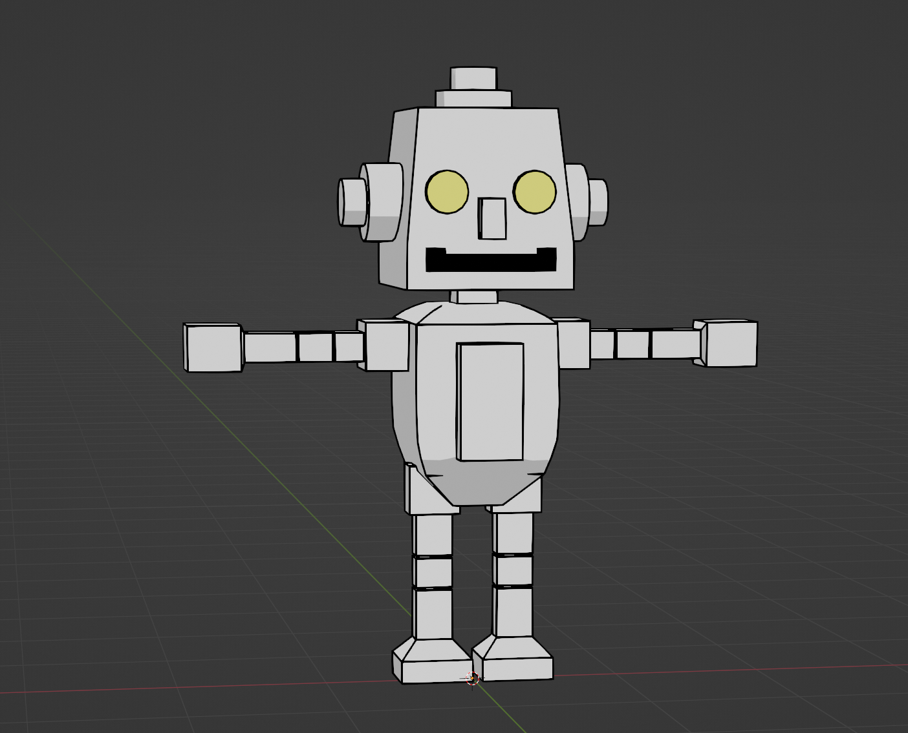

I'm finishing up my final year of university, so this is taking up a lot of my time, along with continuing my summer internship part time through the semester.
I'm working on a desktop client for Bluesky written in Rust. You can check out the progress here. It is not production ready at all and is just a small side project (mostly to learn Rust).
I'm working on a re-animation of the Fillbots minigame from Rhythm Heaven in Blender. I'm still in the beginning stages of modeling and figuring out the specific style I'm going for. Check out some progress photos below:
